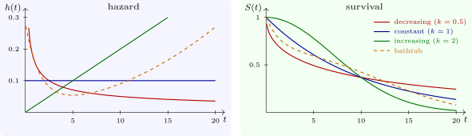

2.2 The hazard function
Definition 2.2.1. The hazard function is \[ h(t) = \lim _{\Delta t \to 0}\frac {P(t \leq T < t + \Delta t \mid T \geq t)}{\Delta t} = \frac {f(t)}{S(t)} . \]
For small \(\Delta t\), \(h(t)\,\Delta t\) is approximately the probability that a subject who has survived to \(t\) has the event in the next \(\Delta t\). It is a rate, not a probability: it has units of events per unit time and can exceed \(1\). The second expression follows from \(P(t \leq T < t + \Delta t \mid T \geq t) = (F(t + \Delta t) - F(t))/S(t)\).
The shape of the hazard describes how risk changes with time (Figure 2):
- constant: the risk does not depend on how long the subject has lasted, as for radioactive decay or random accidents;
- increasing: wear and ageing, as for adult human mortality or mechanical parts;
- decreasing: risk is highest at first and falls as weak units fail early, as after surgery or for electronic components (infant mortality);
- bathtub: high early risk, a stable middle period, then wear-out, typical of human life from birth and of many manufactured products.

Questions on this section
Stuck on something here? Ask below and it stays attached to this topic.